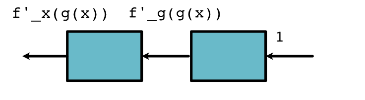

Autodifferentiation¶
So far, we have seen that ScalarFunction can be used to
implement functions on variables. We do this by calling apply on
variables, which then calls the underlying forward method of
the function.
Now, we include additional information on the class that gives the derivative of the individual function. The trick behind autodifferentiation is to use this chain of function calls to compute a derivative. Just like forward calculates the function f(x), we need a function backward to provide this local derivative information.
Backward¶
For every Function, we need to provide a backward method to compute its derivative information. Specifically backward will compute \(f'(x) \times d_{out}\) where \(d_{out}\) is an argument passed in (discussed below).
For the simple function \(f(x) = x \times 5\), we can consult our derivative rules and get that \(f'(x) = 5\). Therefore the backward function is
class TimesFive(ScalarFunction):
@staticmethod
def forward(ctx, x):
return x * 5
@staticmethod
def backward(ctx, d_out):
f_prime = 5
return f_prime * d_out
For functions that take multiple arguments, we return multiple backward arguments for each of the inputs. If the function computes \(f(x, y)\), we need to return \(f'_x(x, y)\) and \(f'_y(x, y)\)
class GFunction(ScalarFunction):
@staticmethod
def forward(ctx, x, y):
# Compute f(x, y)
...
@staticmethod
def backward(ctx, d):
# Compute f'_x(x, y) * d, f'_y(x, y) * d,
...
For example for \(f(x, y) = x + 2 \times y\), we can consult our derivative rules and get that \(f'_x(x, y) = 1\) and \(f'_y(x, y) = 2\). Therefore the backward function is
class AddTimes2(ScalarFunction):
@staticmethod
def forward(ctx, x, y):
return x + 2 * y
@staticmethod
def backward(ctx, d_out):
return d_out, 2 * d_out
Note though that backward works a bit different than the mathematical notation. Sometimes the function for the derivative \(f'(x)\) depends directly on x; however, backward does not take \(x\) as an argument. This was not a problem for the functions above, but things get a bit more interesting when the derivative also depends on \(x\) itself. This is where the context arguments ctx comes in.
Consider a function Square, \(f(x) = x^2\) that squares x. Its derivative \(f'(x) = 2x\) which we write as
class Square(ScalarFunction):
@staticmethod
def forward(ctx, x):
ctx.save_for_backward(x)
return x * x
@staticmethod
def backward(ctx, d_out):
x = ctx.saved_values
f_prime = 2 * x
return f_prime * d_out
This function style requires that we explicitly save anything that in the forward function we save anything we might need for the backward function explicitly. This is an optimization that limits the amount of storage this process requires.
Chain Rule¶
Note
This section discusses implementation of the chain rule for univariate differentiation. Before reading, review the mathematical definition of the Chain Rule .
The above section gives the formula for running backwards on one function. But we need to run backward on two functions in sequence.

We can do this using the univariate chain rule, given by,
Our notation gets a bit hard to follow here, it may be easier to understand if we name each part.
This function tells us that to compute the derivative of the first function, times the derivative of the second functions with respect to the output the first function.
Here's where the perspective of the boxes comes in handy:
This shows that the \(d_{out}\) multiplier passed to backwards of the first box, should be the value returned by backwards of the second box.
A similar approach works for functions two variables,
Or
This shows that the second box, does not care how many arguments the first box had, as long as it passes back \(d_{out}\) that is enough for the chain rule to work.